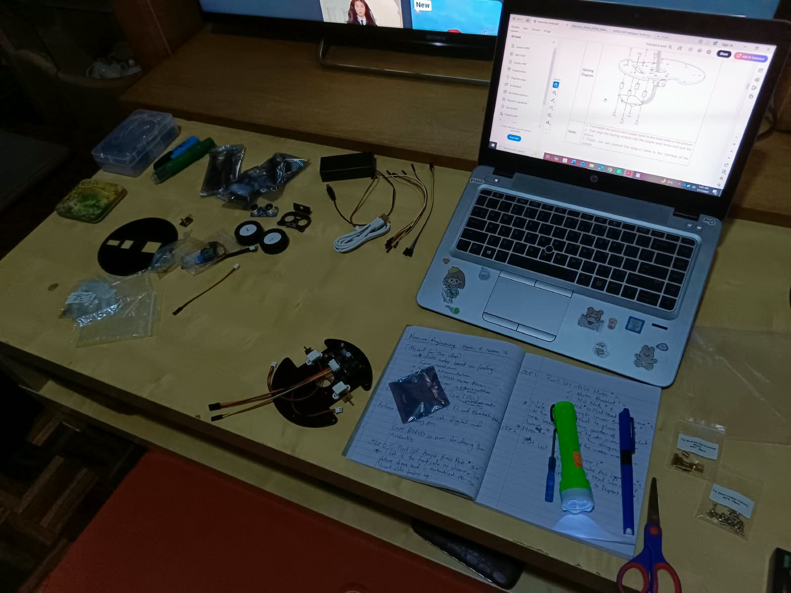
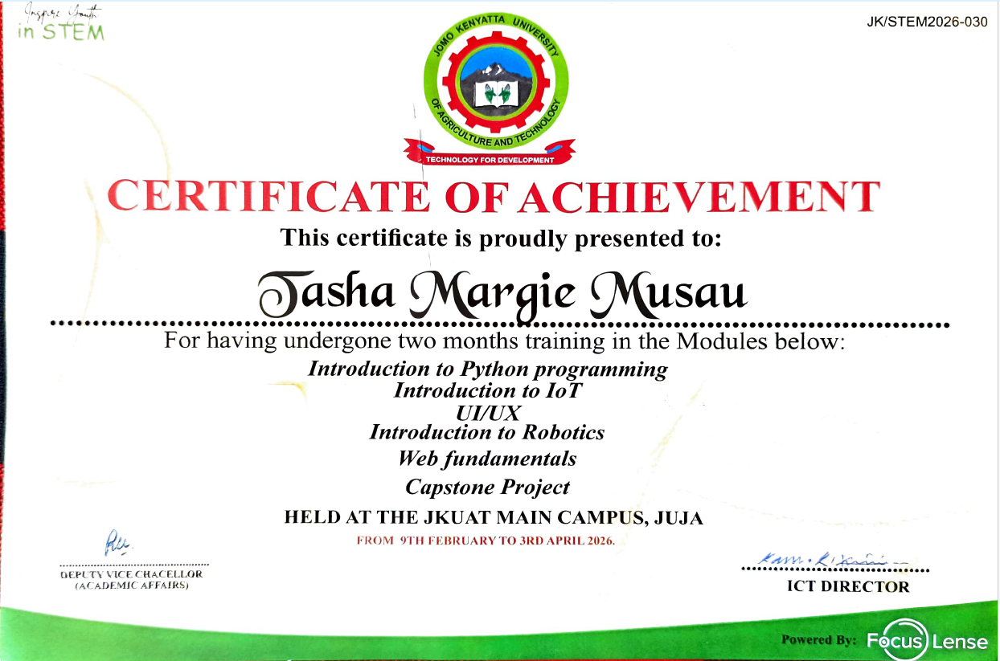
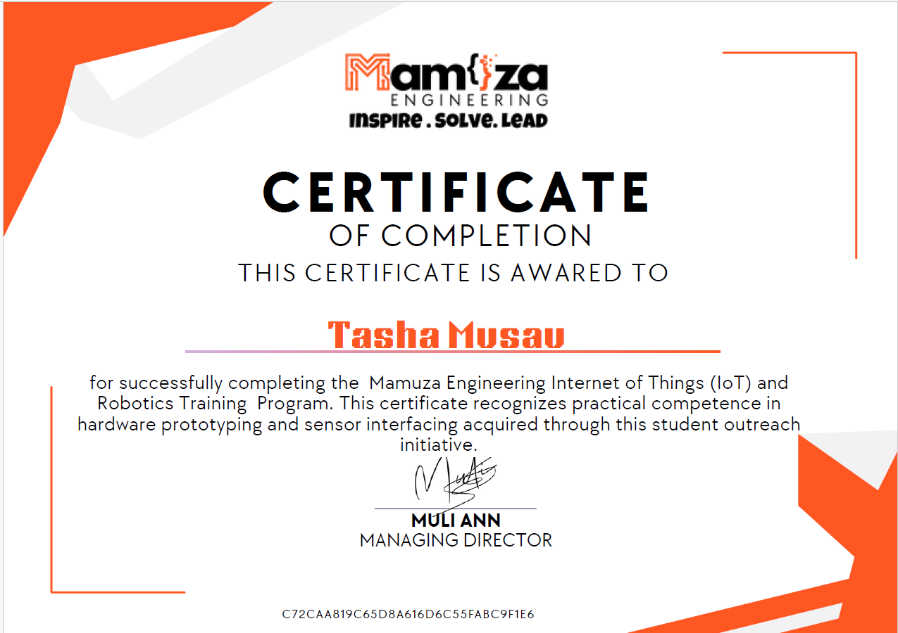
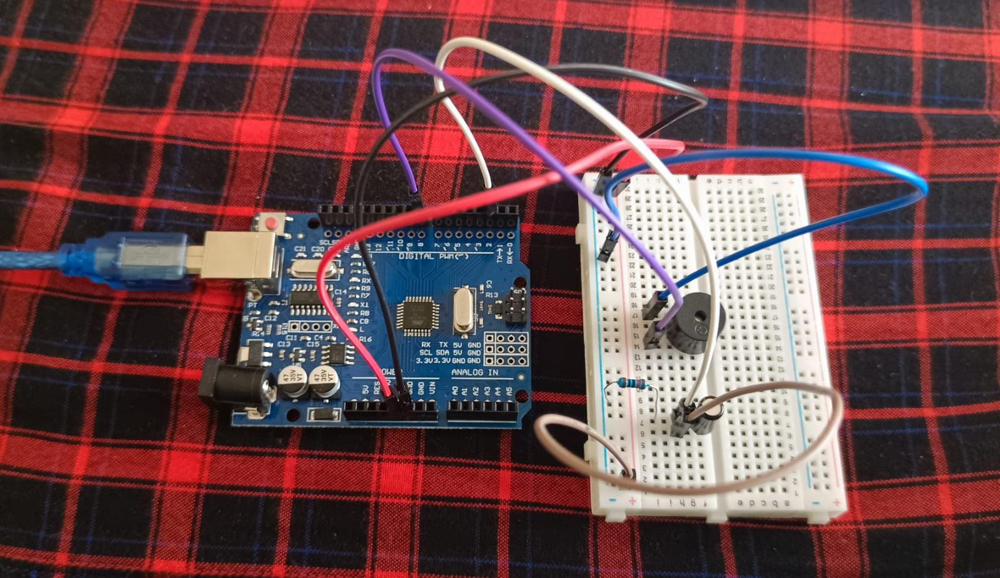
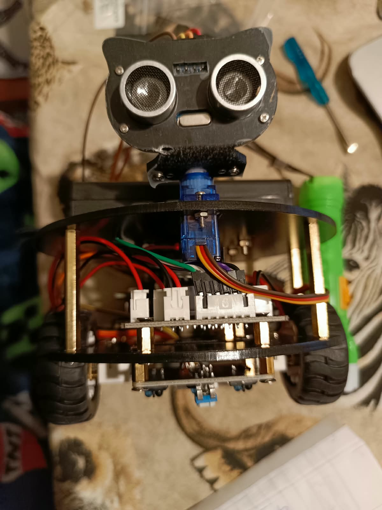
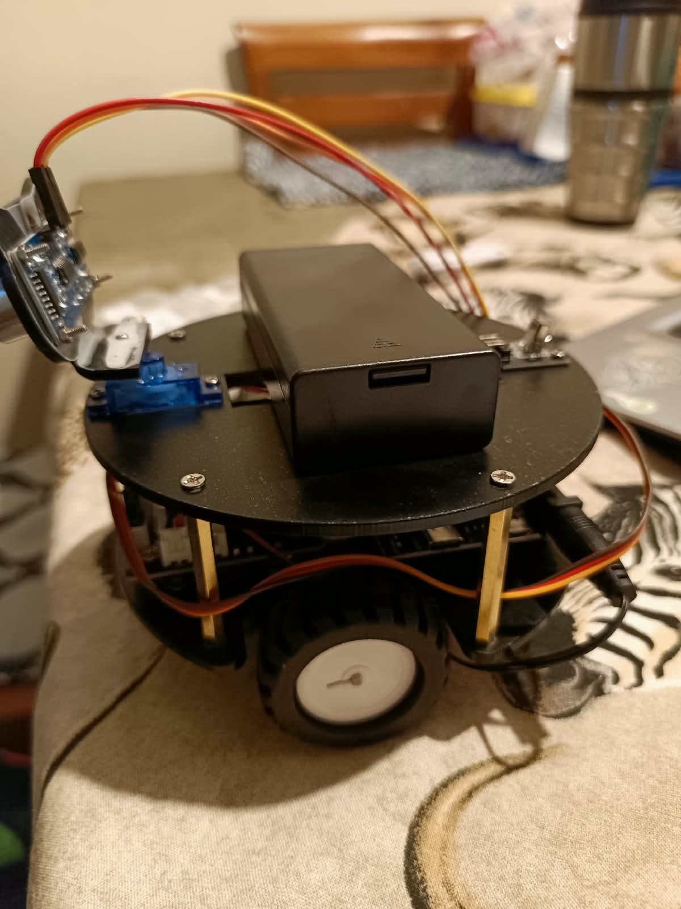
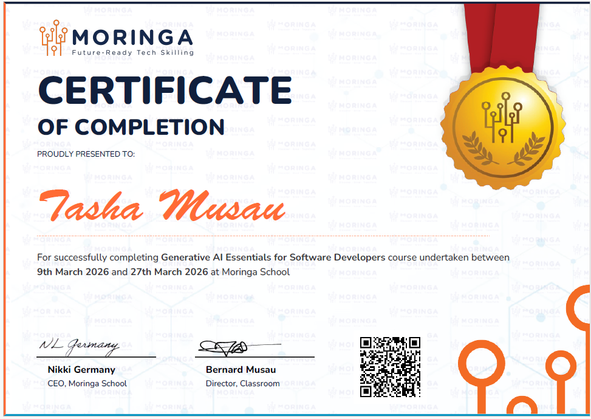

Hi,
I am Tasha Musau
A Mechatronics
Engineer
Download CV
About

Mechatronics Engineering student currently in
JKUAT university with a strong foundation in
C programming, MATLAB, circuit design, and
structural analysis built through
intensive study at Stellenbosch University
and hands-on industry experience.
Skills
Profesional Skills
SKILLS

Projects
JKUAT Inspire Youth in STEM Program

Python
Python is a primary language for backend web development. It is used to manage the logic, databases and APIs that power websites behind the scenes.


IOT
IOT is used in web development as a bridge between physical hardware and digital interfaces, enabling users to monitor, control, and interact with phyical devices through web applications.


Robotics
Robotics helps with the creation of interfaces that allows users to monitor, control, and interact with robotic systems via a browser.


Web basics
Web basics is used to build the structure, apperance, and functionality of websites.


Mamuza
Mamuza Engineering (IOT) and Robotics Training

IOT
Week 1 & Week 2
LDR Project
The LDR (Light Dependent Resistor) changes its resistance depending on light.
In bright light its resistance is low; in darkness it is high. By wiring it with a
10kΩ resistor as a voltage divider, you create a voltage that changes with light —
readable by an analog pin.
Challenge: Build a circuit where an LED turns ON automatically when the room
is dark and turns OFF when there is enough light, just like an outdoor street light.
Potentiometer Project
A Potentiometer has three legs: left → GND, right → 5V, middle (wiper) → varies
between 0V and 5V as you turn the knob. The Arduino reads this with analogRead(A0)
giving a value from 0 to 1023. We then use analogWrite() to set LED brightness using
PWM (Pulse Width Modulation) on a PWM-capable pin (marked ~ on the board: 3, 5, 6, 9, 10, or 11).
Since analogWrite takes 0 to 255, we divide the analogRead value by 4.
Challenge: Build a circuit where turning a potentiometer knob controls LED
brighness smoothly from fully off (0%) to full brightness (100%), like a real light
dimmer switch
Anti-Theft Tilt-Activated Alarm Project
A Tilt sensor is a simple mechanical switch. Inside, a small rolling ball
(or in older versions, a droplet of mercury) bridges two contacts when the sensor is held
upright, completing the circuit. When the sensor is tilted past a certain angle, the ball
rolls away from the contacts and the circuit opens. This makes it behave exactly like a push
button.
An Active buzzer has a built-in oscillator circuit. This means it only needs a
constant HIGH signal to produce a single fixed-pitch tone.
Challenge: Build a self-contained, motion-activated security alarm using a
tilt sensor and a buzzer. Once tilt is detected, the circuit closes and triggers the active
buzzer alarm

Multi-tier Warning Response System Project
DHT11 Temperature & Humidity Sensor Module handles physical air sample ingestion,
returning calibrated digital values for room temperature and relative ambient
humidity over a single-wire digital data frame.
Red & Green Status LEDs serve as local visual indicator states.
The Green LED confirms ambient levels stay within ideal comfort constraints.
The Red LED functions as a visual alert indicating dangerous heat or excessive relative
humidity.
Passive Buzzer Module lacks an internal oscillation block. It functions exactly
like a miniature speaker, requiring an incoming AC wave or automated PWM square wave signal
to move the internal magnetic coil. By changing the input frequency in the software code,
unique sound warning profiles can be programmed.
Challenge: Build the conditional alerting hardware loop. Once verified,
modify the alert logic loop to create a multi-tier warning response system: if the
room conditions enter an intermediate pre-warning zone (Temperature between 27°C and 29.9°C),
flash the Red LED at a slow rate without activating the buzzer. If parameters breach the
full critical limit (30°C+), activate both the full blinking LED sequence and the 1kHz
audio warning track simultaneously.
Week 3
IOT Project
The IOT-enabled egg incubator project integrates core microcontroller and sensor principles to automate and monitor critical incubation parameters. Controlled by an Arduino processor, the system utilizes a DHT sensor to continuously monitor and regulate internal temperature and humidity levels, alongside a water level detector to track reservoir status. A tactile push button interface records and tracks the elapsed days of the incubation period. For safety and reliability, an integrated alert system comprising a passive buzzer and a red LED provides immediate visual and auditory warnings whenever temperature, humidity, or water levels deviate from optimal thresholds. All hardware components are housed within a custom-designed enclosure to maintain a controlled internal environment.
Robotics
Week 4, Week 5 & Week 6
ESP32 WiFi Intelligent Turtle Car
I can construct an ESP32 Wi-Fi Intelligent Turtle Robot.
The robot uses an ESP32 microcontroller as its main control unit,
an L298N motor driver board to control the
motors, an ultrasonic sensor to measure distances and detect
obstacles, a servo motor to turn the head and scan the surroundings,
and three infrared sensors for line tracing.
The robot can be controlled wirelessly through a mobile device connected
to its Wi-Fi network, allowing it to move forward, backward, left,
and right using a control webpage or application. It also has an
object-following function, whereby it moves forward when an
object is far away and reverses when the object is too close,
maintaining a suitable distance. For obstacle avoidance, the
ultrasonic sensor measures the distance to obstacles on the left
and right sides, while the servo motor helps direct the sensor to identify
the clearer path, allowing the robot to turn toward the side with more
space. Additionally, the three infrared sensors enable the robot to detect
and follow a designated line, while an infrared receiver can be used to
support remote-control operation. Finally, I integrated the different
operating modes, including Wi-Fi control, line tracing, object following,
obstacle avoidance, and infrared remote control, into the ESP32 system,
making it possible to select functions and adjust the robot's speed through
a mobile device.
Through this project, I gained practical experience in
robotics, programming, sensor integration, motor control, and wireless
communication, while learning how to combine hardware and software to develop
an intelligent and interactive robotic system.


Moringa
Generative AI Essentials for Software Developers

Week 1, Week 2 & Week 3
The AI Access course taught me how to use Generative AI tools, such as Claude, ChatGPT, and
Gemini, as collaborative assistants to improve efficiency in software development, problem-solving,
and learning. Through online classes and assessments, I learned how to craft effective prompts,
refine them iteratively, and communicate with AI to achieve better results.
The course covered practical applications of AI, including debugging and testing code, writing
and refactoring code, improving existing programs, generating documentation, summaries, and explanations,
and creating reusable prompt templates for common engineering tasks.
I also learned how to use AI to explore new programming languages, frameworks, libraries, and APIs,
while deepening my understanding of programming concepts and principles. The course emphasized using
AI as a supportive learning tool rather than relying on it entirely, encouraging me to evaluate
its suggestions and apply them appropriately.
Project: I was required to select a new programming language, framework, API, or library
to explore using Generative AI and develop a toolkit with instructions to help others follow the same
learning process.
I chose to use Google Gemini to create a beginner-friendly toolkit for C# game development,
through which I explored C# and the Godot game engine and used AI assistance to develop a game.
I was also required to upload the project files to GitHub, including a README file explaining
the project and the source code needed to build the game. This project allowed me to apply the
skills gained throughout the course and demonstrate how Generative AI can support both practical
software development and independent learning.